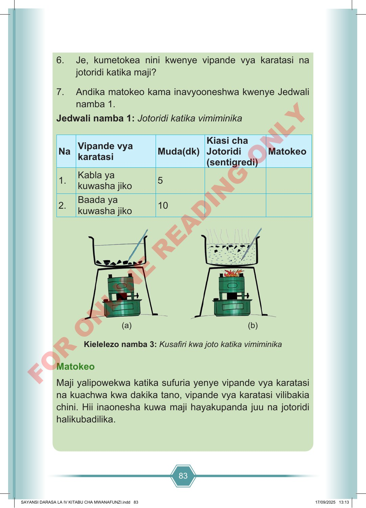

83 6. Je, kumetokea nini kwenye vipande vya karatasi na jotoridi katika maji? 7. Andika matokeo kama inavyooneshwa kwenye Jedwali namba 1. Jedwali namba 1: Jotoridi katika vimiminika Na Vipande vya karatasi Muda(dk) Kiasi cha Jotoridi (sentigredi) Matokeo 1. Kabla ya kuwasha jiko 5 2. Baada ya kuwasha jiko 10 (a) (b) Kielelezo namba 3: Kusafiri kwa joto katika vimiminika Matokeo Maji yalipowekwa katika sufuria yenye vipande vya karatasi na kuachwa kwa dakika tano, vipande vya karatasi vilibakia chini. Hii inaonesha kuwa maji hayakupanda juu na jotoridi halikubadilika. SAYANSI DARASA LA IV KITABU CHA MWANAFUNZI.indd 83 SAYANSI DARASA LA IV KITABU CHA MWANAFUNZI.indd 83 17/09/2025 13:13 17/09/2025 13:13 F O R O N L I N E R E A D I N G O N L Y